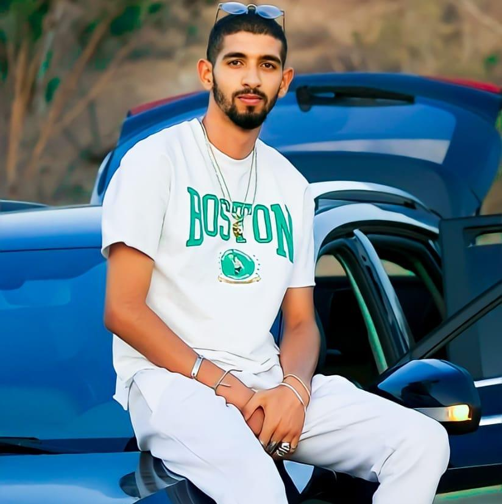

paul walker
nouryahyaoui,
né le 11janvier 2001 à Glendale en Californie et mort le 30 novembre 2013 à Valencia dans le même État,
est un acteur, scénariste et producteur de cinéma américain. Il est principalement connu pour avoir incarné Brian
O'Conner dans la saga Fast and Furious.